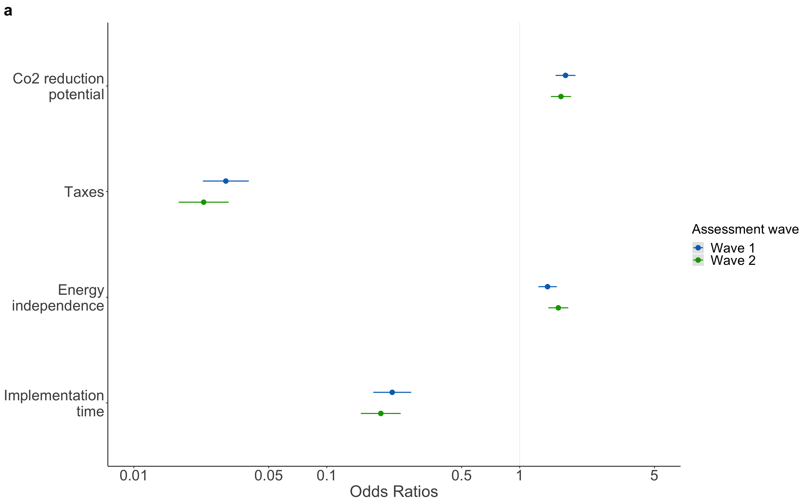
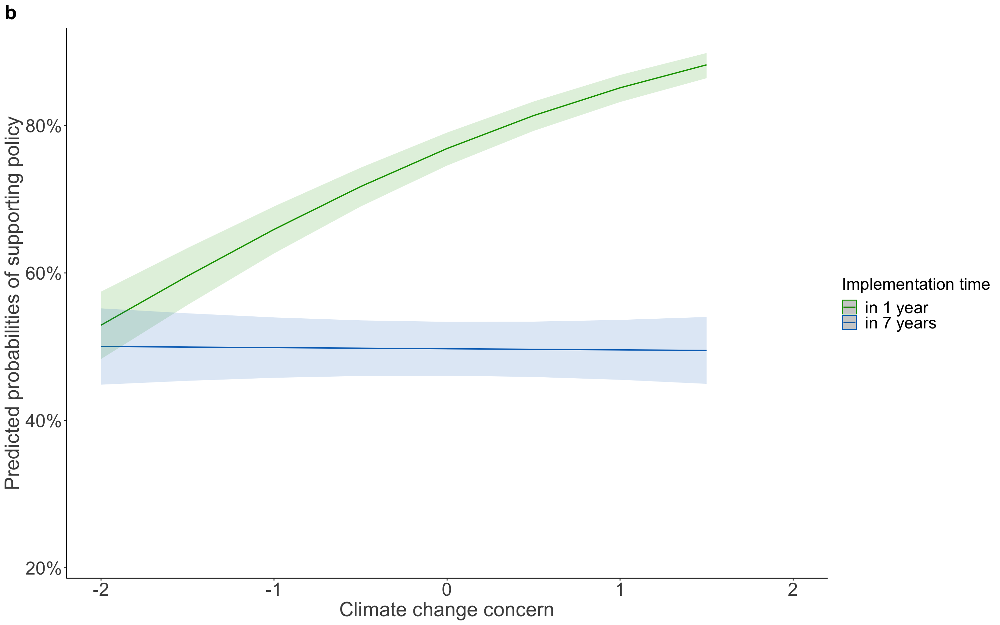
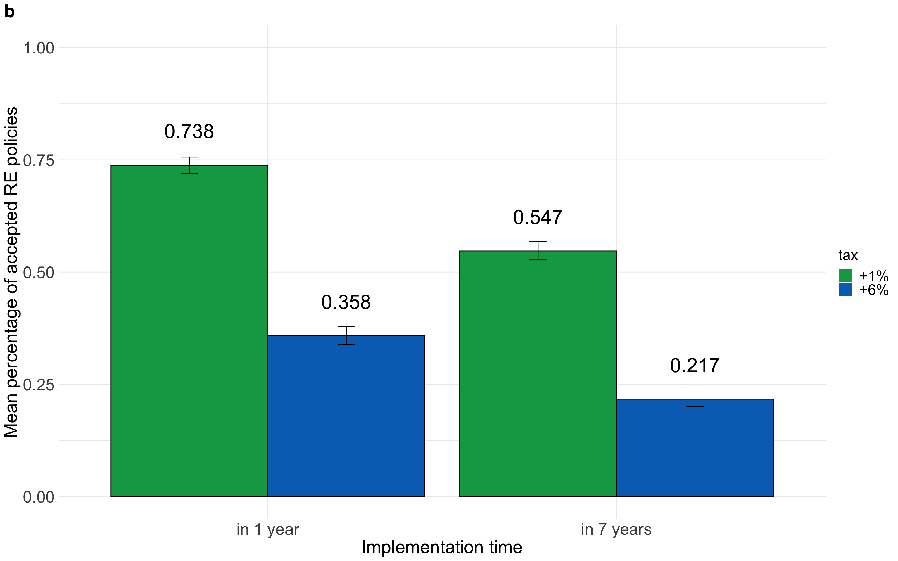
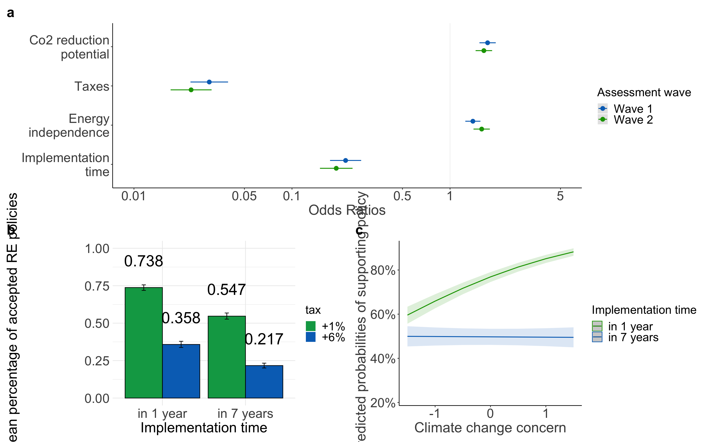

| decision | |||
|---|---|---|---|
| Predictors | Odds Ratios | CI | p |
| (Intercept) | 3.30 | 2.10 – 5.20 | <0.001 |
| co2-30% CO2 | 1.36 | 1.26 – 1.46 | <0.001 |
| tax (1% vs 6%): +6% | 0.13 | 0.12 – 0.14 | <0.001 |
|
energyindependence (10% vs 20%): +20% |
1.19 | 1.10 – 1.28 | <0.001 |
|
implementation (in 1 vs 7 years): in 7 years |
0.37 | 0.35 – 0.40 | <0.001 |
| age | 0.99 | 0.98 – 0.99 | <0.001 |
| gender: male | 1.09 | 0.91 – 1.31 | 0.366 |
| income.wave1<1’500€ <3’100CHF | 1.27 | 0.95 – 1.70 | 0.101 |
| income.wave1> 4’000€ >5’900 CHF | 1.20 | 0.92 – 1.55 | 0.178 |
| income.wave12’500- 4’000€ <4’300- 5’899CHF | 0.90 | 0.70 – 1.17 | 0.441 |
| country: Switzerland | 1.07 | 0.89 – 1.29 | 0.491 |
|
education: obligatory school |
1.37 | 0.99 – 1.90 | 0.059 |
| education: middle school | 1.43 | 1.01 – 2.02 | 0.042 |
| education: degree | 1.31 | 0.93 – 1.84 | 0.121 |
| Random Effects | |||
| σ2 | 3.29 | ||
| τ00 m | 1.85 | ||
| ICC | 0.36 | ||
| N m | 1037 | ||
| Observations | 16592 | ||
| Marginal R2 / Conditional R2 | 0.210 / 0.495 | ||
| decision | |||
|---|---|---|---|
| Predictors | Odds Ratios | CI | p |
| (Intercept) | 4.37 | 2.13 – 8.97 | <0.001 |
| co2-30% CO2 | 1.73 | 1.54 – 1.95 | <0.001 |
| tax (1% vs 6%): +6% | 0.03 | 0.02 – 0.04 | <0.001 |
|
energyindependence (10% vs 20%): +20% |
1.41 | 1.26 – 1.58 | <0.001 |
|
implementation (in 1 vs 7 years): in 7 years |
0.22 | 0.18 – 0.28 | <0.001 |
| age | 0.98 | 0.98 – 0.99 | 0.001 |
| gender: male | 1.09 | 0.82 – 1.45 | 0.561 |
| income.wave1<1’500€ <3’100CHF | 1.54 | 0.99 – 2.40 | 0.054 |
| income.wave1> 4’000€ >5’900 CHF | 1.36 | 0.91 – 2.02 | 0.136 |
| income.wave12’500- 4’000€ <4’300- 5’899CHF | 0.91 | 0.61 – 1.34 | 0.619 |
| country: Switzerland | 1.23 | 0.92 – 1.64 | 0.155 |
|
education: obligatory school |
1.74 | 1.05 – 2.86 | 0.030 |
| education: middle school | 1.98 | 1.17 – 3.37 | 0.011 |
| education: degree | 1.76 | 1.04 – 2.97 | 0.035 |
| Random Effects | |||
| σ2 | 3.29 | ||
| τ00 m | 5.75 | ||
| τ11 m.co2-30% CO2 | 0.58 | ||
| τ11 m.tax+6% | 10.40 | ||
| τ11 m.energieabhaengigkeit+20% | 0.20 | ||
| τ11 m.zeitpunktin 7 years | 8.50 | ||
| ρ01 | 0.03 | ||
| -0.28 | |||
| -0.05 | |||
| -0.35 | |||
| ICC | 0.74 | ||
| N m | 1037 | ||
| Observations | 16592 | ||
| Marginal R2 / Conditional R2 | 0.236 / 0.803 | ||
| decision | |||
|---|---|---|---|
| Predictors | Odds Ratios | CI | p |
| (Intercept) | 4.59 | 3.75 – 5.61 | <0.001 |
| co2-30% CO2 | 1.73 | 1.53 – 1.95 | <0.001 |
| tax (1% vs 6%): +6% | 0.03 | 0.02 – 0.04 | <0.001 |
|
energyindependence (10% vs 20%): +20% |
1.39 | 1.25 – 1.56 | <0.001 |
|
implementation (in 1 vs 7 years): in 7 years |
0.22 | 0.17 – 0.27 | <0.001 |
| Random Effects | |||
| σ2 | 3.29 | ||
| τ00 m | 5.69 | ||
| τ11 m.co2-30% CO2 | 0.55 | ||
| τ11 m.tax+6% | 10.28 | ||
| τ11 m.energieabhaengigkeit+20% | 0.18 | ||
| τ11 m.zeitpunktin 7 years | 8.53 | ||
| ρ01 | 0.06 | ||
| -0.27 | |||
| -0.05 | |||
| -0.34 | |||
| ICC | 0.74 | ||
| N m | 1037 | ||
| Observations | 16592 | ||
| Marginal R2 / Conditional R2 | 0.227 / 0.801 | ||
| decision | |||
|---|---|---|---|
| Predictors | Odds Ratios | CI | p |
| (Intercept) | 4.76 | 3.02 – 7.50 | <0.001 |
| co2-30% CO2 | 1.38 | 1.28 – 1.49 | <0.001 |
| tax (1% vs 6%): +6% | 0.12 | 0.11 – 0.14 | <0.001 |
|
energyindependence (10% vs 20%): +20% |
1.19 | 1.10 – 1.29 | <0.001 |
|
implementation (in 1 vs 7 years): in 7 years |
0.38 | 0.35 – 0.41 | <0.001 |
| concern.scaled | 1.98 | 1.82 – 2.16 | <0.001 |
| age | 0.98 | 0.98 – 0.99 | <0.001 |
| gender: male | 1.22 | 1.02 – 1.47 | 0.032 |
| income.wave1<1’500€ <3’100CHF | 1.25 | 0.94 – 1.66 | 0.122 |
| income.wave1> 4’000€ >5’900 CHF | 1.11 | 0.86 – 1.44 | 0.413 |
| income.wave12’500- 4’000€ <4’300- 5’899CHF | 0.87 | 0.67 – 1.11 | 0.262 |
| country: Switzerland | 1.08 | 0.90 – 1.30 | 0.417 |
|
education: obligatory school |
1.20 | 0.87 – 1.66 | 0.277 |
| education: middle school | 1.15 | 0.81 – 1.62 | 0.435 |
| education: degree | 1.06 | 0.75 – 1.48 | 0.752 |
| zeitpunktin 7 years:concern.scaled | 0.54 | 0.51 – 0.58 | <0.001 |
| Random Effects | |||
| σ2 | 3.29 | ||
| τ00 m | 1.79 | ||
| ICC | 0.35 | ||
| N m | 1037 | ||
| Observations | 16592 | ||
| Marginal R2 / Conditional R2 | 0.260 / 0.520 | ||
| decision | |||
|---|---|---|---|
| Predictors | Odds Ratios | CI | p |
| (Intercept) | 7.01 | 3.51 – 13.97 | <0.001 |
| co2-30% CO2 | 1.71 | 1.52 – 1.92 | <0.001 |
| tax (1% vs 6%): +6% | 0.03 | 0.02 – 0.04 | <0.001 |
|
energyindependence (10% vs 20%): +20% |
1.41 | 1.26 – 1.57 | <0.001 |
|
implementation (in 1 vs 7 years): in 7 years |
0.23 | 0.18 – 0.28 | <0.001 |
| concern.scaled | 2.67 | 2.32 – 3.06 | <0.001 |
| age | 0.98 | 0.97 – 0.99 | <0.001 |
| gender: male | 1.31 | 1.00 – 1.72 | 0.050 |
| income.wave1<1’500€ <3’100CHF | 1.43 | 0.94 – 2.18 | 0.095 |
| income.wave1> 4’000€ >5’900 CHF | 1.23 | 0.84 – 1.80 | 0.294 |
| income.wave12’500- 4’000€ <4’300- 5’899CHF | 0.82 | 0.56 – 1.19 | 0.294 |
| country: Switzerland | 1.19 | 0.90 – 1.57 | 0.214 |
|
education: obligatory school |
1.49 | 0.93 – 2.40 | 0.100 |
| education: middle school | 1.47 | 0.89 – 2.43 | 0.137 |
| education: degree | 1.34 | 0.81 – 2.20 | 0.255 |
| zeitpunktin 7 years:concern.scaled | 0.42 | 0.35 – 0.50 | <0.001 |
| Random Effects | |||
| σ2 | 3.29 | ||
| τ00 m | 5.40 | ||
| τ11 m.co2-30% CO2 | 0.57 | ||
| τ11 m.tax+6% | 10.58 | ||
| τ11 m.energieabhaengigkeit+20% | 0.21 | ||
| τ11 m.zeitpunktin 7 years | 7.50 | ||
| ρ01 | -0.20 | ||
| -0.35 | |||
| -0.18 | |||
| -0.26 | |||
| ICC | 0.73 | ||
| N m | 1037 | ||
| Observations | 16592 | ||
| Marginal R2 / Conditional R2 | 0.278 / 0.803 | ||
## vars n mean sd median trimmed mad min max range skew kurtosis se
## X1 1 1037 0.52 0.36 0.58 0.53 0.32 -0.64 1.54 2.18 -0.26 0.24 0.01## [1] 1.609624| CO2 attribute importance | |||
|---|---|---|---|
| Predictors | Estimates | CI | p |
| (Intercept) | 0.053 | -0.074 – 0.179 | 0.415 |
| gender [male] | 0.002 | -0.041 – 0.045 | 0.925 |
| age | 0.000 | -0.001 – 0.002 | 0.588 |
| income<1’500- 2’499€ 3’100-4’299CHF | 0.066 | -0.001 – 0.133 | 0.053 |
|
income [2’500- 4’000€ <4’300- 5’899CHF] |
0.015 | -0.051 – 0.080 | 0.660 |
|
income [> 4’000€ >5’900 CHF] |
0.051 | -0.015 – 0.118 | 0.130 |
| country [Switzerland] | 0.024 | -0.020 – 0.067 | 0.281 |
|
education [obligatory school] |
0.041 | -0.035 – 0.117 | 0.285 |
| education [middle school] | 0.077 | -0.004 – 0.157 | 0.061 |
| education [degree] | 0.069 | -0.011 – 0.148 | 0.089 |
| climate concern | 0.073 | 0.055 – 0.090 | <0.001 |
| Observations | 1037 | ||
| R2 / R2 adjusted | 0.080 / 0.071 | ||
| CO2 attribute importance | |||
|---|---|---|---|
| Predictors | Estimates | CI | p |
| (Intercept) | 0.465 | 0.376 – 0.554 | <0.001 |
| gender: male | -0.002 | -0.044 – 0.041 | 0.941 |
| age | 0.000 | -0.001 – 0.002 | 0.738 |
| income<1’500- 2’499€ 3’100-4’299CHF | 0.064 | -0.002 – 0.130 | 0.058 |
|
income: 2’500- 4’000€ <4’300- 5’899CHF |
0.017 | -0.047 – 0.081 | 0.612 |
|
income: > 4’000€ >5’900 CHF |
0.066 | 0.002 – 0.130 | 0.043 |
| countrySwitzerland | 0.016 | -0.026 – 0.059 | 0.453 |
|
climate change concern (scaled) |
0.076 | 0.059 – 0.093 | <0.001 |
| Observations | 1034 | ||
| R2 / R2 adjusted | 0.078 / 0.072 | ||
## vars n mean sd median trimmed mad min max range skew kurtosis se
## X1 1 2074 0.34 0.21 0.37 0.35 0.23 -0.27 0.85 1.12 -0.3 -0.76 0## [1] 1.434231| CO2 attribute importance | |||
|---|---|---|---|
| Predictors | Estimates | CI | p |
| (Intercept) | 0.243 | 0.202 – 0.284 | <0.001 |
| waveWave 2 | 0.000 | -0.016 – 0.016 | 0.999 |
| gender: male | -0.012 | -0.028 – 0.004 | 0.147 |
| age | 0.001 | 0.000 – 0.001 | 0.027 |
| income<1’500- 2’499€ 3’100-4’299CHF | 0.026 | 0.001 – 0.051 | 0.043 |
|
income: 2’500- 4’000€ <4’300- 5’899CHF |
-0.006 | -0.031 – 0.018 | 0.601 |
|
income: > 4’000€ >5’900 CHF |
0.019 | -0.006 – 0.044 | 0.128 |
| countrySwitzerland | 0.002 | -0.015 – 0.018 | 0.854 |
|
education: obligatory school |
0.057 | 0.028 – 0.085 | <0.001 |
| education: middle school | 0.087 | 0.057 – 0.117 | <0.001 |
| education: degree | 0.088 | 0.059 – 0.118 | <0.001 |
|
climate change concern (scaled) |
0.068 | 0.062 – 0.075 | <0.001 |
| Observations | 2074 | ||
| R2 / R2 adjusted | 0.225 / 0.221 | ||
| CO2 attribute importance | |||
|---|---|---|---|
| Predictors | Estimates | CI | p |
| (Intercept) | 0.31 | 0.27 – 0.34 | <0.001 |
| gender: male | -0.01 | -0.03 – 0.00 | 0.152 |
| age | 0.00 | -0.00 – 0.00 | 0.078 |
| income<1’500- 2’499€ 3’100-4’299CHF | 0.03 | 0.01 – 0.06 | 0.018 |
|
income: 2’500- 4’000€ <4’300- 5’899CHF |
0.00 | -0.02 – 0.03 | 0.793 |
|
income: > 4’000€ >5’900 CHF |
0.04 | 0.01 – 0.06 | 0.004 |
| countrySwitzerland | 0.00 | -0.01 – 0.02 | 0.853 |
|
climate change concern (scaled) |
0.07 | 0.07 – 0.08 | <0.001 |
| Observations | 2074 | ||
| R2 / R2 adjusted | 0.209 / 0.207 | ||
| decision | |||
|---|---|---|---|
| Predictors | Odds Ratios | CI | p |
| (Intercept) | 3.12 | 1.83 – 5.33 | <0.001 |
| co2-30% CO2 | 1.29 | 1.19 – 1.39 | <0.001 |
| tax (1% vs 6%): +6% | 0.11 | 0.10 – 0.12 | <0.001 |
|
energyindependence (10% vs 20%): +20% |
1.27 | 1.17 – 1.37 | <0.001 |
|
implementation (in 1 vs 7 years): in 7 years |
0.33 | 0.30 – 0.36 | <0.001 |
| age | 0.98 | 0.98 – 0.99 | <0.001 |
| gender: male | 1.07 | 0.86 – 1.33 | 0.546 |
| income.wave2<1’500€ <3’100CHF | 1.20 | 0.85 – 1.70 | 0.306 |
| income.wave2> 4’000€ >5’900 CHF | 1.16 | 0.85 – 1.57 | 0.354 |
| income.wave22’500- 4’000€ <4’300- 5’899CHF | 1.06 | 0.78 – 1.43 | 0.724 |
| country: Switzerland | 1.11 | 0.89 – 1.39 | 0.341 |
|
education: obligatory school |
1.72 | 1.16 – 2.54 | 0.007 |
| education: middle school | 1.71 | 1.13 – 2.57 | 0.011 |
| education: degree | 2.13 | 1.42 – 3.20 | <0.001 |
| Random Effects | |||
| σ2 | 3.29 | ||
| τ00 m | 2.75 | ||
| ICC | 0.46 | ||
| N m | 1037 | ||
| Observations | 16592 | ||
| Marginal R2 / Conditional R2 | 0.213 / 0.571 | ||
| decision | |||
|---|---|---|---|
| Predictors | Odds Ratios | CI | p |
| (Intercept) | 6.28 | 2.70 – 14.60 | <0.001 |
| co2-30% CO2 | 1.62 | 1.44 – 1.83 | <0.001 |
| tax (1% vs 6%): +6% | 0.02 | 0.02 – 0.03 | <0.001 |
|
energyindependence (10% vs 20%): +20% |
1.57 | 1.40 – 1.77 | <0.001 |
|
implementation (in 1 vs 7 years): in 7 years |
0.19 | 0.15 – 0.24 | <0.001 |
| age | 0.98 | 0.97 – 0.99 | <0.001 |
| gender: male | 1.07 | 0.76 – 1.49 | 0.714 |
| income.wave2<1’500€ <3’100CHF | 1.18 | 0.69 – 2.01 | 0.543 |
| income.wave2> 4’000€ >5’900 CHF | 1.11 | 0.70 – 1.77 | 0.655 |
| income.wave22’500- 4’000€ <4’300- 5’899CHF | 1.04 | 0.65 – 1.65 | 0.884 |
| country: Switzerland | 1.19 | 0.85 – 1.68 | 0.309 |
|
education: obligatory school |
1.98 | 1.10 – 3.59 | 0.023 |
| education: middle school | 2.09 | 1.11 – 3.91 | 0.022 |
| education: degree | 2.82 | 1.51 – 5.28 | 0.001 |
| Random Effects | |||
| σ2 | 3.29 | ||
| τ00 m | 7.86 | ||
| τ11 m.co2-30% CO2 | 0.39 | ||
| τ11 m.tax+6% | 11.44 | ||
| τ11 m.energieabhaengigkeit+20% | 0.31 | ||
| τ11 m.zeitpunktin 7 years | 8.88 | ||
| ρ01 | 0.35 | ||
| -0.26 | |||
| -0.10 | |||
| -0.30 | |||
| ICC | 0.78 | ||
| N m | 1037 | ||
| Observations | 16592 | ||
| Marginal R2 / Conditional R2 | 0.233 / 0.830 | ||
| decision | |||
|---|---|---|---|
| Predictors | Odds Ratios | CI | p |
| (Intercept) | 5.17 | 4.10 – 6.53 | <0.001 |
| co2-30% CO2 | 1.64 | 1.45 – 1.85 | <0.001 |
| tax (1% vs 6%): +6% | 0.02 | 0.02 – 0.03 | <0.001 |
|
energyindependence (10% vs 20%): +20% |
1.59 | 1.41 – 1.79 | <0.001 |
|
implementation (in 1 vs 7 years): in 7 years |
0.19 | 0.15 – 0.24 | <0.001 |
| Random Effects | |||
| σ2 | 3.29 | ||
| τ00 m | 8.22 | ||
| τ11 m.co2-30% CO2 | 0.34 | ||
| τ11 m.tax+6% | 11.53 | ||
| τ11 m.energieabhaengigkeit+20% | 0.36 | ||
| τ11 m.zeitpunktin 7 years | 8.88 | ||
| ρ01 | 0.41 | ||
| -0.26 | |||
| -0.11 | |||
| -0.30 | |||
| ICC | 0.78 | ||
| N m | 1037 | ||
| Observations | 16592 | ||
| Marginal R2 / Conditional R2 | 0.222 / 0.832 | ||
| decision | |||
|---|---|---|---|
| Predictors | Odds Ratios | CI | p |
| (Intercept) | 5.12 | 3.05 – 8.60 | <0.001 |
| co2-30% CO2 | 1.29 | 1.19 – 1.40 | <0.001 |
| tax (1% vs 6%): +6% | 0.11 | 0.10 – 0.12 | <0.001 |
|
energyindependence (10% vs 20%): +20% |
1.28 | 1.18 – 1.39 | <0.001 |
|
implementation (in 1 vs 7 years): in 7 years |
0.34 | 0.31 – 0.37 | <0.001 |
| concern.scaled | 2.19 | 1.99 – 2.40 | <0.001 |
| age | 0.98 | 0.97 – 0.99 | <0.001 |
| gender: male | 1.20 | 0.97 – 1.48 | 0.092 |
| income.wave2<1’500€ <3’100CHF | 1.19 | 0.85 – 1.67 | 0.310 |
| income.wave2> 4’000€ >5’900 CHF | 1.17 | 0.87 – 1.57 | 0.305 |
| income.wave22’500- 4’000€ <4’300- 5’899CHF | 1.13 | 0.85 – 1.52 | 0.404 |
| country: Switzerland | 1.09 | 0.88 – 1.34 | 0.453 |
|
education: obligatory school |
1.41 | 0.97 – 2.05 | 0.076 |
| education: middle school | 1.26 | 0.84 – 1.87 | 0.262 |
| education: degree | 1.54 | 1.04 – 2.29 | 0.031 |
| zeitpunktin 7 years:concern.scaled | 0.56 | 0.52 – 0.60 | <0.001 |
| Random Effects | |||
| σ2 | 3.29 | ||
| τ00 m | 2.49 | ||
| ICC | 0.43 | ||
| N m | 1037 | ||
| Observations | 16592 | ||
| Marginal R2 / Conditional R2 | 0.278 / 0.589 | ||
| decision | |||
|---|---|---|---|
| Predictors | Odds Ratios | CI | p |
| (Intercept) | 12.34 | 5.52 – 27.59 | <0.001 |
| co2-30% CO2 | 1.62 | 1.44 – 1.83 | <0.001 |
| tax (1% vs 6%): +6% | 0.02 | 0.02 – 0.03 | <0.001 |
|
energyindependence (10% vs 20%): +20% |
1.58 | 1.41 – 1.78 | <0.001 |
|
implementation (in 1 vs 7 years): in 7 years |
0.19 | 0.15 – 0.23 | <0.001 |
| concern.scaled | 3.17 | 2.72 – 3.70 | <0.001 |
| age | 0.97 | 0.96 – 0.98 | <0.001 |
| gender: male | 1.31 | 0.95 – 1.81 | 0.095 |
| income.wave2<1’500€ <3’100CHF | 1.15 | 0.69 – 1.90 | 0.595 |
| income.wave2> 4’000€ >5’900 CHF | 1.08 | 0.70 – 1.69 | 0.719 |
| income.wave22’500- 4’000€ <4’300- 5’899CHF | 1.11 | 0.71 – 1.73 | 0.642 |
| country: Switzerland | 1.12 | 0.81 – 1.55 | 0.494 |
|
education: obligatory school |
1.50 | 0.85 – 2.63 | 0.158 |
| education: middle school | 1.40 | 0.77 – 2.54 | 0.270 |
| education: degree | 1.90 | 1.05 – 3.44 | 0.033 |
| zeitpunktin 7 years:concern.scaled | 0.45 | 0.38 – 0.53 | <0.001 |
| Random Effects | |||
| σ2 | 3.29 | ||
| τ00 m | 7.38 | ||
| τ11 m.co2-30% CO2 | 0.34 | ||
| τ11 m.tax+6% | 11.95 | ||
| τ11 m.energieabhaengigkeit+20% | 0.34 | ||
| τ11 m.zeitpunktin 7 years | 8.09 | ||
| ρ01 | -0.02 | ||
| -0.33 | |||
| -0.11 | |||
| -0.23 | |||
| ICC | 0.76 | ||
| N m | 1037 | ||
| Observations | 16592 | ||
| Marginal R2 / Conditional R2 | 0.293 / 0.833 | ||

| decision | |||
|---|---|---|---|
| Predictors | Odds Ratios | CI | p |
| (Intercept) | 3.25 | 2.22 – 4.76 | <0.001 |
| wave Wave 2 | 0.98 | 0.93 – 1.04 | 0.507 |
| co2-30% CO2 | 1.29 | 1.22 – 1.36 | <0.001 |
| tax [+6%] | 0.15 | 0.14 – 0.16 | <0.001 |
|
energieabhaengigkeit [+20%] |
1.21 | 1.15 – 1.27 | <0.001 |
| zeitpunkt [in 7 years] | 0.38 | 0.36 – 0.40 | <0.001 |
| country [Switzerland] | 1.09 | 0.93 – 1.28 | 0.284 |
| age | 0.99 | 0.98 – 0.99 | <0.001 |
| gender [male] | 1.07 | 0.91 – 1.25 | 0.425 |
|
education [obligatory school] |
1.43 | 1.09 – 1.89 | 0.011 |
| education [middle school] | 1.47 | 1.10 – 1.96 | 0.010 |
| education [degree] | 1.57 | 1.18 – 2.09 | 0.002 |
| income<1’500- 2’499€ 3’100-4’299CHF | 0.90 | 0.77 – 1.06 | 0.214 |
|
income [2’500- 4’000€ <4’300- 5’899CHF] |
0.95 | 0.79 – 1.13 | 0.562 |
|
income [> 4’000€ >5’900 CHF] |
1.04 | 0.86 – 1.26 | 0.668 |
| Random Effects | |||
| σ2 | 3.29 | ||
| τ00 m | 1.44 | ||
| ICC | 0.30 | ||
| N m | 1037 | ||
| Observations | 33184 | ||
| Marginal R2 / Conditional R2 | 0.207 / 0.448 | ||
| decision | |||
|---|---|---|---|
| Predictors | Odds Ratios | CI | p |
| (Intercept) | 4.34 | 2.65 – 7.12 | <0.001 |
| wave Wave 2 | 0.98 | 0.92 – 1.04 | 0.488 |
| co2-30% CO2 | 1.46 | 1.36 – 1.56 | <0.001 |
| tax [+6%] | 0.07 | 0.06 – 0.08 | <0.001 |
|
energieabhaengigkeit [+20%] |
1.34 | 1.26 – 1.43 | <0.001 |
| zeitpunkt [in 7 years] | 0.30 | 0.26 – 0.34 | <0.001 |
| country [Switzerland] | 1.18 | 0.97 – 1.45 | 0.097 |
| age | 0.98 | 0.98 – 0.99 | <0.001 |
| gender [male] | 1.05 | 0.87 – 1.28 | 0.601 |
|
education [obligatory school] |
1.54 | 1.09 – 2.18 | 0.014 |
| education [middle school] | 1.58 | 1.09 – 2.28 | 0.015 |
| education [degree] | 1.69 | 1.18 – 2.43 | 0.004 |
| income<1’500- 2’499€ 3’100-4’299CHF | 0.88 | 0.73 – 1.07 | 0.204 |
|
income [2’500- 4’000€ <4’300- 5’899CHF] |
0.97 | 0.78 – 1.19 | 0.750 |
|
income [> 4’000€ >5’900 CHF] |
1.07 | 0.85 – 1.34 | 0.577 |
| Random Effects | |||
| σ2 | 3.29 | ||
| τ00 m | 3.22 | ||
| τ11 m.co2-30% CO2 | 0.13 | ||
| τ11 m.tax+6% | 5.23 | ||
| τ11 m.energieabhaengigkeit+20% | 0.05 | ||
| τ11 m.zeitpunktin 7 years | 3.94 | ||
| ρ01 | 0.48 | ||
| -0.29 | |||
| 0.23 | |||
| -0.45 | |||
| ICC | 0.59 | ||
| N m | 1037 | ||
| Observations | 33184 | ||
| Marginal R2 / Conditional R2 | 0.225 / 0.680 | ||
| decision | |||
|---|---|---|---|
| Predictors | Odds Ratios | CI | p |
| (Intercept) | 3.47 | 3.02 – 3.98 | <0.001 |
| wave Wave 2 | 0.97 | 0.92 – 1.03 | 0.389 |
| co2-30% CO2 | 1.44 | 1.35 – 1.54 | <0.001 |
| tax [+6%] | 0.07 | 0.06 – 0.08 | <0.001 |
|
energieabhaengigkeit [+20%] |
1.34 | 1.25 – 1.43 | <0.001 |
| zeitpunkt [in 7 years] | 0.30 | 0.26 – 0.34 | <0.001 |
| Random Effects | |||
| σ2 | 3.29 | ||
| τ00 m | 3.15 | ||
| τ11 m.co2-30% CO2 | 0.12 | ||
| τ11 m.tax+6% | 5.26 | ||
| τ11 m.energieabhaengigkeit+20% | 0.05 | ||
| τ11 m.zeitpunktin 7 years | 3.90 | ||
| ρ01 | 0.52 | ||
| -0.28 | |||
| 0.26 | |||
| -0.43 | |||
| ICC | 0.59 | ||
| N m | 1037 | ||
| Observations | 33184 | ||
| Marginal R2 / Conditional R2 | 0.216 / 0.680 | ||
| decision | |||
|---|---|---|---|
| Predictors | Odds Ratios | CI | p |
| (Intercept) | 4.35 | 3.02 – 6.27 | <0.001 |
| wave Wave 2 | 0.98 | 0.93 – 1.03 | 0.447 |
|
energieabhaengigkeit [+20%] |
1.21 | 1.15 – 1.27 | <0.001 |
| tax [+6%] | 0.14 | 0.13 – 0.15 | <0.001 |
| co2-30% CO2 | 1.29 | 1.23 – 1.36 | <0.001 |
| zeitpunkt [in 7 years] | 0.39 | 0.37 – 0.41 | <0.001 |
| concern scaled | 1.69 | 1.60 – 1.78 | <0.001 |
| country [Switzerland] | 1.09 | 0.94 – 1.26 | 0.268 |
| age | 0.98 | 0.98 – 0.99 | <0.001 |
| gender [male] | 1.13 | 0.97 – 1.31 | 0.105 |
|
education [obligatory school] |
1.28 | 0.98 – 1.66 | 0.067 |
| education [middle school] | 1.22 | 0.93 – 1.61 | 0.158 |
| education [degree] | 1.30 | 0.99 – 1.70 | 0.061 |
| income<1’500- 2’499€ 3’100-4’299CHF | 0.91 | 0.77 – 1.06 | 0.231 |
|
income [2’500- 4’000€ <4’300- 5’899CHF] |
0.94 | 0.79 – 1.12 | 0.519 |
|
income [> 4’000€ >5’900 CHF] |
1.05 | 0.87 – 1.26 | 0.606 |
|
zeitpunkt [in 7 years] × concern scaled |
0.58 | 0.56 – 0.61 | <0.001 |
| Random Effects | |||
| σ2 | 3.29 | ||
| τ00 m | 1.26 | ||
| ICC | 0.28 | ||
| N m | 1037 | ||
| Observations | 33184 | ||
| Marginal R2 / Conditional R2 | 0.247 / 0.456 | ||
| decision | |||
|---|---|---|---|
| Predictors | Odds Ratios | CI | p |
| (Intercept) | 5.33 | 3.37 – 8.43 | <0.001 |
| wave Wave 2 | 0.97 | 0.92 – 1.03 | 0.369 |
|
energieabhaengigkeit [+20%] |
1.34 | 1.26 – 1.43 | <0.001 |
| tax [+6%] | 0.07 | 0.06 – 0.08 | <0.001 |
| co2-30% CO2 | 1.46 | 1.36 – 1.56 | <0.001 |
| zeitpunkt [in 7 years] | 0.30 | 0.26 – 0.34 | <0.001 |
| concern scaled | 1.75 | 1.64 – 1.88 | <0.001 |
| country [Switzerland] | 1.15 | 0.96 – 1.39 | 0.133 |
| age | 0.98 | 0.98 – 0.99 | <0.001 |
| gender [male] | 1.12 | 0.93 – 1.34 | 0.224 |
|
education [obligatory school] |
1.34 | 0.97 – 1.84 | 0.075 |
| education [middle school] | 1.32 | 0.94 – 1.86 | 0.107 |
| education [degree] | 1.41 | 1.01 – 1.97 | 0.044 |
| income<1’500- 2’499€ 3’100-4’299CHF | 0.90 | 0.75 – 1.09 | 0.282 |
|
income [2’500- 4’000€ <4’300- 5’899CHF] |
0.96 | 0.79 – 1.18 | 0.723 |
|
income [> 4’000€ >5’900 CHF] |
1.09 | 0.88 – 1.36 | 0.434 |
|
zeitpunkt [in 7 years] × concern scaled |
0.58 | 0.53 – 0.63 | <0.001 |
| Random Effects | |||
| σ2 | 3.29 | ||
| τ00 m | 2.51 | ||
| τ11 m.co2-30% CO2 | 0.11 | ||
| τ11 m.tax+6% | 5.23 | ||
| τ11 m.energieabhaengigkeit+20% | 0.05 | ||
| τ11 m.zeitpunktin 7 years | 3.15 | ||
| ρ01 | 0.24 | ||
| -0.36 | |||
| 0.13 | |||
| -0.31 | |||
| ICC | 0.55 | ||
| N m | 1037 | ||
| Observations | 33184 | ||
| Marginal R2 / Conditional R2 | 0.255 / 0.668 | ||
| decision | |||
|---|---|---|---|
| Predictors | Odds Ratios | CI | p |
| (Intercept) | 3.33 | 2.93 – 3.77 | <0.001 |
| wave Wave 2 | 0.98 | 0.92 – 1.04 | 0.470 |
|
energieabhaengigkeit [+20%] |
1.35 | 1.27 – 1.44 | <0.001 |
| tax [+6%] | 0.07 | 0.06 – 0.08 | <0.001 |
| co2-30% CO2 | 1.46 | 1.36 – 1.56 | <0.001 |
| zeitpunkt [in 7 years] | 0.30 | 0.26 – 0.34 | <0.001 |
| concern scaled | 1.72 | 1.61 – 1.84 | <0.001 |
|
zeitpunkt [in 7 years] × concern scaled |
0.58 | 0.53 – 0.63 | <0.001 |
| Random Effects | |||
| σ2 | 3.29 | ||
| τ00 m | 2.43 | ||
| τ11 m.co2-30% CO2 | 0.11 | ||
| τ11 m.tax+6% | 5.18 | ||
| τ11 m.energieabhaengigkeit+20% | 0.05 | ||
| τ11 m.zeitpunktin 7 years | 3.12 | ||
| ρ01 | 0.29 | ||
| -0.33 | |||
| 0.13 | |||
| -0.27 | |||
| ICC | 0.56 | ||
| N m | 1037 | ||
| Observations | 33184 | ||
| Marginal R2 / Conditional R2 | 0.245 / 0.669 | ||
## x predicted std.error conf.low conf.high group
## 1 in 1 year 0.6591128 0.07249576 0.6265054 0.6902807 -1
## 2 in 1 year 0.8512213 0.07383827 0.8319473 0.8686337 1
## 3 in 7 years 0.4987450 0.08375194 0.4578079 0.5396989 -1
## 4 in 7 years 0.4956950 0.08308810 0.4551037 0.5363431 1## Data were 'prettified'. Consider using `terms="concern.scaled [all]"` to
## get smooth plots.
## Data: data.decision.waves.long
## Models:
## model.both.waves.2.c: decision ~ wave + co2 + tax + energieabhaengigkeit + zeitpunkt + country + age + gender + education + income + (1 + co2 + tax + energieabhaengigkeit + zeitpunkt | m)
## model.H1b.both.waves2.d: decision ~ wave + energieabhaengigkeit + tax + co2 + zeitpunkt * concern.scaled + country + age + gender + education + income + (1 + co2 + tax + energieabhaengigkeit + zeitpunkt | m)
## npar AIC BIC logLik deviance Chisq Df Pr(>Chisq)
## model.both.waves.2.c 30 31757 32009 -15848 31697
## model.H1b.both.waves2.d 32 31519 31788 -15727 31455 242.09 2 < 2.2e-16
##
## model.both.waves.2.c
## model.H1b.both.waves2.d ***
## ---
## Signif. codes: 0 '***' 0.001 '**' 0.01 '*' 0.05 '.' 0.1 ' ' 1| decision | |||
|---|---|---|---|
| Predictors | Odds Ratios | CI | p |
| (Intercept) | 3.37 | 2.90 – 3.91 | <0.001 |
| wave Wave 2 | 1.02 | 0.89 – 1.16 | 0.787 |
| co2-30% CO2 | 1.53 | 1.40 – 1.67 | <0.001 |
| tax [+6%] | 0.07 | 0.06 – 0.08 | <0.001 |
|
energieabhaengigkeit [+20%] |
1.30 | 1.19 – 1.42 | <0.001 |
| zeitpunkt [in 7 years] | 0.30 | 0.26 – 0.35 | <0.001 |
| waveWave 2:co2-30% CO2 | 0.91 | 0.80 – 1.02 | 0.116 |
| wave Wave 2 × tax [+6%] | 1.00 | 0.89 – 1.13 | 0.961 |
|
wave Wave 2 × energieabhaengigkeit [+20%] |
1.07 | 0.95 – 1.21 | 0.265 |
|
wave Wave 2 × zeitpunkt [in 7 years] |
0.94 | 0.83 – 1.06 | 0.300 |
| Random Effects | |||
| σ2 | 3.29 | ||
| τ00 m | 3.19 | ||
| τ11 m.co2-30% CO2 | 0.13 | ||
| τ11 m.tax+6% | 5.28 | ||
| τ11 m.energieabhaengigkeit+20% | 0.05 | ||
| τ11 m.zeitpunktin 7 years | 3.94 | ||
| ρ01 | 0.52 | ||
| -0.28 | |||
| 0.24 | |||
| -0.43 | |||
| ICC | 0.59 | ||
| N m | 1037 | ||
| Observations | 33184 | ||
| Marginal R2 / Conditional R2 | 0.216 / 0.681 | ||
| decision | |||
|---|---|---|---|
| Predictors | Odds Ratios | CI | p |
| (Intercept) | 3.51 | 3.05 – 4.04 | <0.001 |
| wave Wave 2 | 0.94 | 0.86 – 1.02 | 0.154 |
|
energieabhaengigkeit [+20%] |
1.30 | 1.19 – 1.42 | <0.001 |
| tax [+6%] | 0.07 | 0.06 – 0.08 | <0.001 |
| co2-30% CO2 | 1.46 | 1.36 – 1.56 | <0.001 |
| zeitpunkt [in 7 years] | 0.29 | 0.26 – 0.34 | <0.001 |
|
wave Wave 2 × energieabhaengigkeit [+20%] |
1.07 | 0.95 – 1.21 | 0.259 |
| Random Effects | |||
| σ2 | 3.29 | ||
| τ00 m | 3.19 | ||
| τ11 m.co2-30% CO2 | 0.13 | ||
| τ11 m.tax+6% | 5.28 | ||
| τ11 m.energieabhaengigkeit+20% | 0.05 | ||
| τ11 m.zeitpunktin 7 years | 3.94 | ||
| ρ01 | 0.51 | ||
| -0.28 | |||
| 0.23 | |||
| -0.43 | |||
| ICC | 0.59 | ||
| N m | 1037 | ||
| Observations | 33184 | ||
| Marginal R2 / Conditional R2 | 0.216 / 0.682 | ||
| decision | |||
|---|---|---|---|
| Predictors | Odds Ratios | CI | p |
| (Intercept) | 3.23 | 2.70 – 3.85 | <0.001 |
| country [Switzerland] | 1.17 | 0.93 – 1.46 | 0.187 |
| wave Wave 2 | 0.92 | 0.82 – 1.04 | 0.186 |
|
energieabhaengigkeit [+20%] |
1.29 | 1.14 – 1.46 | <0.001 |
| tax [+6%] | 0.07 | 0.06 – 0.08 | <0.001 |
| co2-30% CO2 | 1.46 | 1.36 – 1.56 | <0.001 |
| zeitpunkt [in 7 years] | 0.30 | 0.26 – 0.34 | <0.001 |
|
country [Switzerland] × wave Wave 2 |
1.06 | 0.89 – 1.25 | 0.535 |
|
country [Switzerland] × energieabhaengigkeit [+20%] |
1.03 | 0.86 – 1.22 | 0.775 |
|
wave Wave 2 × energieabhaengigkeit [+20%] |
1.06 | 0.90 – 1.25 | 0.477 |
|
(country [Switzerland] × wave Wave 2) × energieabhaengigkeit [+20%] |
0.99 | 0.78 – 1.27 | 0.964 |
| Random Effects | |||
| σ2 | 3.29 | ||
| τ00 m | 3.16 | ||
| τ11 m.co2-30% CO2 | 0.12 | ||
| τ11 m.tax+6% | 5.25 | ||
| τ11 m.energieabhaengigkeit+20% | 0.05 | ||
| τ11 m.zeitpunktin 7 years | 3.93 | ||
| ρ01 | 0.51 | ||
| -0.27 | |||
| 0.23 | |||
| -0.43 | |||
| ICC | 0.59 | ||
| N m | 1037 | ||
| Observations | 33184 | ||
| Marginal R2 / Conditional R2 | 0.217 / 0.681 | ||

